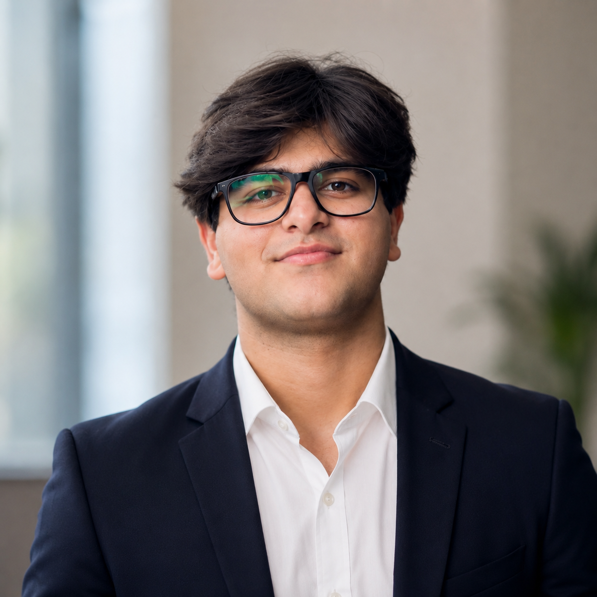

A-Level student, President of the TECH Society, and founder of Mukammal Sehat — an NGO improving health outcomes for underserved communities. Learning to build things that matter.
Head of STEM at Lahore Grammar School, previously leading both the TECH Society and Astro-Physics Society across 4+ years of consecutive leadership roles — from Environmental Head in 2019 to Head Boy in 2021, and now heading STEM-wide initiatives since 2024.
Outside the classroom, I founded Mukammal Sehat, an NGO focused on mental and physical health for underserved communities — raising over 100,000 PKR through a single fundraising campaign and running ongoing awareness drives.
Academically, I've held the "Best Student in Academics" title 7 times and been recognized as a High Achiever every year, alongside 9 A*/A grades at O Levels that earned me a 100% scholarship into A Levels.
I'm currently building foundational skills in Python, web development, and data analysis through internships and independent projects, with an eye toward a CS degree.

2024 – Present. Built a health-focused NGO from the ground up — established its mission, assembled a management team, and led a fundraising campaign that raised over 100,000 PKR for underserved communities, including orphans.
@mukammalsehatorg ↗Sept 2024 – Present. Lead a team of student tech enthusiasts, organizing coding competitions, workshops, and digital awareness campaigns — building on skills sharpened through CS50 (Harvard) and Google AI Essentials.
Sept 2022 – Apr 2024. Co-organized physics workshops and STEM outreach events. Also a 2× 1st-place winner in Pakistan at the International Kangaroo Math Contest, and a regular award-winner at ACSEC.
Sept 2021 – May 2022. Represented the student body and coordinated with faculty on student-led initiatives.
Sept 2019 – May 2020. Led school-wide awareness campaigns and environmental sustainability projects.
Supported language-learning initiatives at school, alongside pursuing German through Goethe-Institut certification.
Ran a health-focused NGO through awareness campaigns and community drives, raising 100,000+ PKR.
Built and deployed a full-stack portfolio site using Flask, SQLite, and plain HTML/CSS/JS.
Built the official event website for LGS's SCIENJECT 5.0 STEM showcase.
Built a simple daily-use calculator application to practice core programming logic.